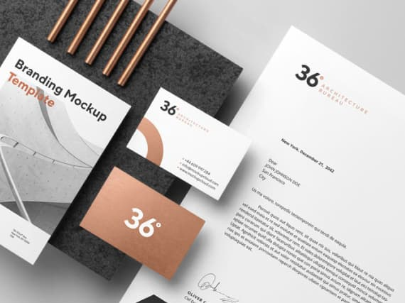
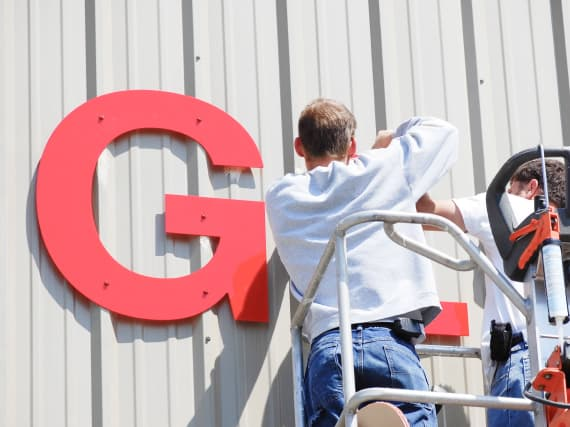

Сервис
Разработка дизайн-макета
Мы занимаемся разработкой дизайн-макетов различной сложности. Изготовливаем дизайн-макеты вывесок, банеров, рекламных щитов, визиток, буклетов, календарей и прочей продукции. Дизайн-макет - это идеи по художественному и техническому оформлению рекламной информации, представленные в графическом виде. Не важно, будет ли это билборд или фирменный бланк - разработка дизайн-макета необходима всегда. Компания Promomix готова предложить услуги дизайнеров, имеющих высокую квалификацию. Все работы по дизайну осуществляются максимально качественно и оперативно.
Согласование вывески
Все виды маркетинговой продукции, которые размещаются на фасадах задний, обязательно нужно согласовывать в комитете по архитектуре и градостроительству. Согласование вывески - это достаточно сложный процесс, который занимает много времени. Наша компания возьмёт на себя все проблемы с согласованием вывесок и поможет в быстром решении этого вопроса. У нас работают специалисты, которые имеют успешный опыт прохождения данной процедуры, поэтому мы с уверенностью можем гарантировать вам удачное подписание документов с первого раза.
-

Варианты размещения
Подбираем для вас оптимальные варианты размещения и оформления рекламных или информационных конструкций.
-

Подготовка документов
Подготавливаем необходимые документы и фотоматериалы, разрабатываем эскизы, дизайн-проекты и технические расчеты.
-
Согласование документов
Осуществляем согласование документов в соответствующих инстанциях, после чего передаём вам готовый пакет документов.
Фотопривязка
C помощью фотопривязки можно предварительно посмотреть как будет размещена и как будет выглядеть, например, вывеска магазина. Создавая изображение с помощью фотомонтажа, мы учитываем пропорции, масштаб вывески относительно окружающих объектов и стремимся показать её максимально похожей на то, что будет воплощено в реальности. Фотопривязка имеет огромное значение при изготовлении рекламных конструкций разного размера, от простых до самых сложных форм и обязательна для согласования с городом.
Разработка фирменного стиля
Качественный дизайн фирменного стиля является одним из основных гарантов коммерческого успеха. Эффективность продаж, репутация бренда и доверие клиентов - всё это во многом зависит от визуального стиля компании. Профессионально разработанный фирменный стиль становится значимым конкурентным преимуществом любой компании, является неотъемлемой частью имиджа и важнейшим инструментом для продвижения и укрепления позиций на рынке. Именно такой фирменный стиль мы предлагаем своим клиентам.

-
Нейминг
Оригинальное название бренда является мощнейшим маркетинговым инструментом компании.
-
Логотип
Один из важнейших идентификаторов бренда, предопределяет вектор развития всей визуальной стратегии бренда.
-
Фирменная графика
Фирменная графика раскрывает характер бренда, его идеологию и философию. Продвигает стиль компании в любой информационной среде.
-
Фирменные цвета
Фиксированный набор фирменных цветов, помогает сделать бренд узнаваемым в любом визуализированном пространстве.
Монтаж ⁄ демонтаж
Первое впечатление о организации у посетителя складывается от внешней привлекательности вывески и наружной рекламы. Поскольку наружное оформление играет немаловажную роль, своим клиентам мы предлагаем профессиональный монтаж и демонтаж наружной рекламы. Монтаж и демонтаж производится в короткие сроки и осуществляется опытными специалистами, что гарантирует качество работ.
Обслуживание вывесок
Даже самая качественная наружная реклама требует своевременного обслуживания. Из-за неблагоприятных погодных условий, порывов ветра, пыли и грязи рекламная конструкция теряет свою привлекательность. Для того чтобы она служила вам как можно дольше, необходимо своевременно выполнять качественное обслуживание. Мы ценим наших клиентов, поэтому предлагаем весь спектр услуг по её обслуживанию. Работы выполняются высококвалифицированными специалистами, способными справиться с любой задачей - от мойки и до ремонта.
-

Плановая диагностика
Диагностика помогает определить степень загрязнения конструкции, необходимость устранения мелких дефектов, крепежа и т.д
-
Внутренняя и наружная мойка
Мойка рекламной конструкции выполняется с использованием профессиональных моющих средств, гарантирующих сохранность цвета.
-

Ремонт вывесок
Мы работаем с разными типами конструкций, осуществляем ремонт любой сложности и даём гарантию на выполненные работы.